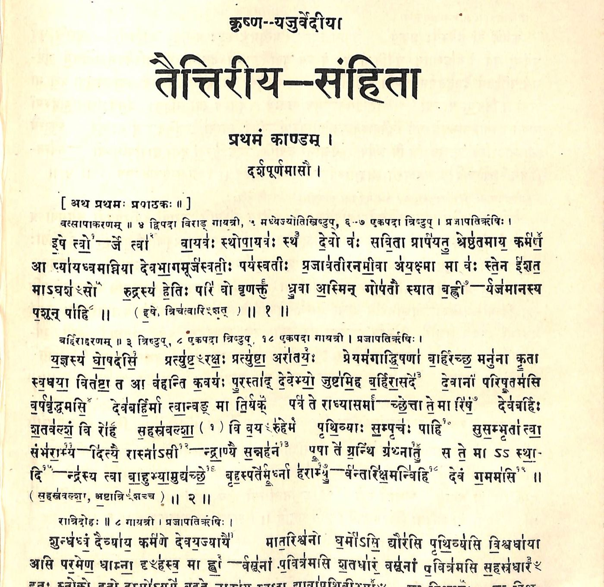

The handful
Every living tradition is carried by a few people at a time.
A vidvān who knows the text by heart. A few students. A reciter whose voice the others learned from. Someone who keeps the files. For years, what the digital age gave them was this: the book, scanned.

 THE SAME MANTRA, CHANTEDTHE BOOK, SCANNED
THE SAME MANTRA, CHANTEDTHE BOOK, SCANNED
Taittirīya Saṃhitā 1.1.1, इषे त्वोर्जे त्वा. Drag across.
A scan holds the words. It cannot hold the chant, the commentary beside the verse, or the teacher's voice. To hold those, a handful of people would need a team: an engineer, an editor, a designer, an analyst. A small tradition has never had one.
This year, one joined us. Claude Code.